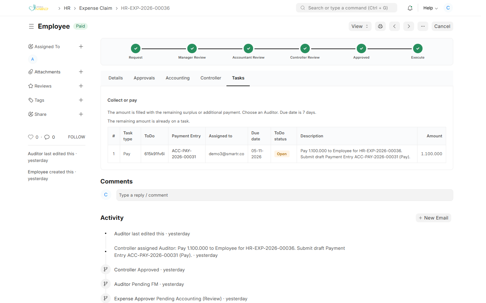
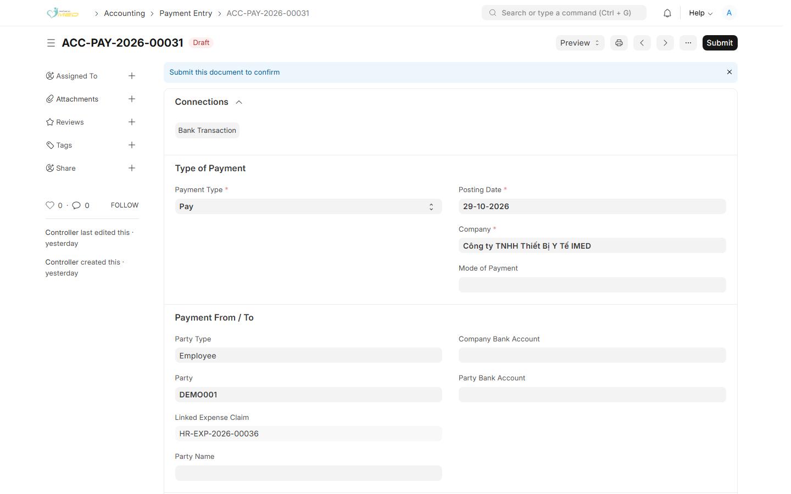

Khi nào làm
Kiểm Soát Trưởng đã chọn Final Approve. Trên phiếu, bước Approved hoàn tất. Nếu số tiền được duyệt lớn hơn đề nghị tạm ứng đã chi, còn một khoản Additional payment phải trả nhân viên.
Kiểm Soát Trưởng mở tab Tasks, chọn Auditor và tạo việc. Hệ thống tạo ToDo và Payment Entry bản nháp kiểu Pay. Bạn nộp chứng từ chi đó.
Chi tiền trước khi nhân viên đi làm là hướng dẫn chi đề nghị tạm ứng.
Nhận việc
Bước 1: Xem task trên phiếu đã duyệt
Mở Expense Claim đã Paid / Approved. Tab Tasks có mục Collect or pay. Dòng Pay ghi số tiền, người được giao và mã Payment Entry. Trạng thái ToDo là Open khi chứng từ chi chưa nộp.

Mô tả dòng việc nói rõ: nộp draft Payment Entry kiểu Pay.
Nộp Payment Entry
Bước 2: Mở chứng từ chi
Vào Accounting → Payment Entry và mở đúng mã trên task. Chứng từ còn nhãn Draft.
Kiểm tra:
- Payment Type = Pay
- Party Type = Employee và đúng Party
- Linked Expense Claim trùng phiếu trên task

Bước 3: Điền và Submit
Điền Mode of Payment, Company Bank Account và Party Bank Account nếu chuyển khoản. Thanh trên cùng báo Submit this document to confirm.
Nhấn Submit. Sau khi nộp, việc trên tab Tasks đóng. Không sửa số tiền khác với dòng task trừ khi Kiểm Soát Trưởng tạo lại việc.